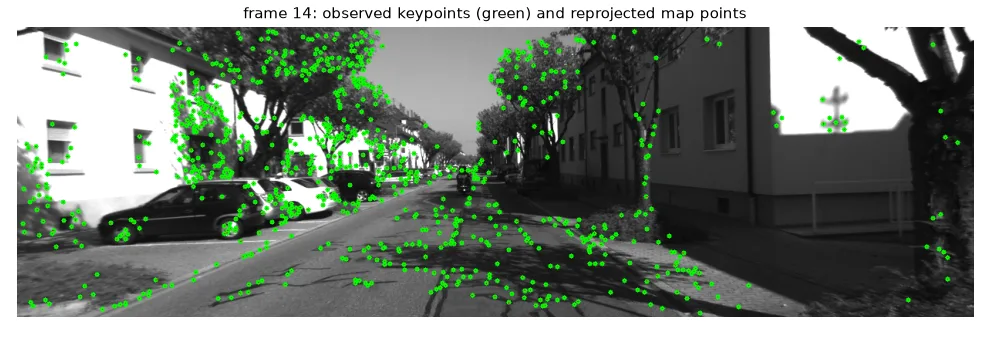

One camera, two positions#
Stereo needs two cameras at a known distance. A single moving camera also sees the scene from two positions — we just don't know the motion between them. Structure from Motion (SfM) estimates both at once: the camera poses (motion) and the 3-D points (structure). Run frame after frame, it is visual odometry, the core of visual SLAM (lesson 17).
Our data: the first 15 frames of KITTI sequence 00, a car driving down a street, with the camera's calibration.
The calibration has to be the right one
In my original activity I loaded intrinsics.yml, which was in fact the calibration of OpenCV's 640×480 stereo samples (\(f = 535\)), not of KITTI (\(f = 718.9\), images 1241×376). The reconstruction "worked" but its geometry was distorted. Everything downstream depends on \(K\).
fs = cv2.FileStorage(str(U.path("kitti/calib.yml")), cv2.FILE_STORAGE_READ)
K = fs.getNode("K").mat() # fx = fy = 718.856, cx = 607.19, cy = 185.22
fs.release()
frames = [cv2.imread(f, cv2.IMREAD_GRAYSCALE) for f in sorted(glob.glob(str(U.path("kitti/*.png"))))]
sift = cv2.SIFT_create(nfeatures=3000)
features = [sift.detectAndCompute(f, None) for f in frames] # (keypoints, descriptors) per frame
flann = cv2.FlannBasedMatcher(dict(algorithm=1, trees=5), dict(checks=50))
def match(i, j, ratio=0.7):
"""Indices (qi, tj) of ratio-test matches between frames i and j."""
knn = flann.knnMatch(features[i][1], features[j][1], k=2)
return [(m.queryIdx, m.trainIdx) for m, n in knn if m.distance < ratio * n.distance]
def pts(i, idx):
return np.float32([features[i][0][k].pt for k in idx])
The essential matrix#
For two views of the same calibrated camera, with relative rotation \(R\) and translation \(\mathbf{t}\), corresponding points in normalised coordinates \(\hat{\mathbf{x}} = K^{-1}\mathbf{x}\) satisfy the epipolar constraint
\(E\) (5 degrees of freedom) can be estimated from 5 matches; findEssentialMat runs Nistér's 5-point algorithm inside RANSAC.
Decomposing \(E\) gives four possible \((R, \mathbf{t})\): two rotations × two signs of \(\mathbf{t}\). Only one places the scene in front of both cameras (the cheirality condition). recoverPose triangulates the points for each candidate and keeps the right one:
pairs = match(0, 1)
p0, p1 = pts(0, [a for a, _ in pairs]), pts(1, [b for _, b in pairs])
E, inl = cv2.findEssentialMat(p0, p1, K, method=cv2.RANSAC, prob=0.999, threshold=1.0)
# E has 4 possible (R, t) decompositions; recoverPose keeps the one that puts the
# triangulated points *in front of both cameras* (the cheirality check).
n_good, R, t, inl = cv2.recoverPose(E, p0, p1, K, mask=inl)
init: 1209 matches, 912 pass RANSAC + cheirality
R ~ I (small rotation): [-0.0023 0.0041 -0.0019] | t direction: [-0.021 -0.016 -1. ]
the 4 candidates: (R1, t), (R1, -t), (R2, t), (R2, -t); R1 angle 0.3 deg, R2 angle 179.9 deg
decomposeEssentialMat is not enough
My first version took R, _, t = cv2.decomposeEssentialMat(E): the first rotation and the translation, without checking which of the four combinations is physical. Here one of the rotations is a 180° flip — picking it puts the whole scene behind the camera.
Note that \(\|\mathbf{t}\| = 1\): from images alone, the scale is unknown. A street seen from 1 m of motion looks exactly like a twice larger street seen from 2 m. Monocular reconstructions are only defined up to scale; we will measure everything in units of the first baseline. (Stereo, an IMU, or a known object size fixes the scale.)
Triangulation#
Each camera \(k\) has a projection matrix \(P_k = K\,[R_k \mid \mathbf{t}_k]\). A point seen at \(\mathbf{x}_a\) and \(\mathbf{x}_b\) lies at the intersection of two rays; triangulatePoints solves the linear system \(\mathbf{x} \times P\mathbf{X} = \mathbf{0}\) for both views with the SVD (a DLT, like lesson 13). Rays never meet exactly, so we keep only points in front of both cameras with a small reprojection error:
def triangulate(Ra, ta, Rb, tb, xa, xb):
"""Linear triangulation; returns N x 3 world points and a validity mask."""
Pa = K @ np.hstack([Ra, ta]) # 3 x 4 projection matrices
Pb = K @ np.hstack([Rb, tb])
X = cv2.triangulatePoints(Pa, Pb, xa.T, xb.T) # 4 x N, homogeneous
X = (X[:3] / X[3]).T
# keep points in front of both cameras, not absurdly far, with small reprojection error
za = (X @ Ra.T + ta.T)[:, 2]
zb = (X @ Rb.T + tb.T)[:, 2]
proj = cv2.projectPoints(X, cv2.Rodrigues(Rb)[0], tb, K, None)[0].reshape(-1, 2)
ok = (za > 0) & (zb > 0) & (za < 80) & (np.linalg.norm(proj - xb, axis=1) < 2.0)
return X, ok
poses = [(np.eye(3), np.zeros((3, 1))), (R, t)] # world = camera 0; |t| = 1 sets the scale
points, colors = [], []
track = [dict(), dict()] # per frame: keypoint index -> 3-D point index
inl = inl.ravel() > 0
good_pairs = [p for p, ok in zip(pairs, inl) if ok]
X, ok = triangulate(*poses[0], *poses[1], pts(0, [a for a, _ in good_pairs]), pts(1, [b for _, b in good_pairs]))
for (a, b), x, valid in zip(good_pairs, X, ok):
if valid:
track[0][a] = track[1][b] = len(points)
points.append(x)
Adding frames with PnP#
For a new frame we should not estimate a new essential matrix: its translation would again have length 1, and the scale would drift at every frame. Instead we use the map: the new frame sees points we have already triangulated, so its pose is a Perspective-n-Point problem (lesson 14), solved robustly with RANSAC, and its scale is automatically consistent with the map.
The key is the bookkeeping: for each frame, a dictionary keypoint index → map point index. A match between frame \(k-1\) and frame \(k\) whose keypoint in \(k-1\) is in the map gives a 2-D/3-D correspondence for frame \(k\).
for k in range(2, len(frames)):
pairs = match(k - 1, k)
track.append(dict())
# 2-D/3-D correspondences: keypoints of frame k whose partner in frame k-1 is already a map point
known = [(track[k - 1][a], b) for a, b in pairs if a in track[k - 1]]
obj = np.float32([points[i] for i, _ in known])
img = pts(k, [b for _, b in known])
ok, rvec, tvec, inliers = cv2.solvePnPRansac(obj, img, K, None, reprojectionError=2.0,
iterationsCount=200, flags=cv2.SOLVEPNP_ITERATIVE)
Rk = cv2.Rodrigues(rvec)[0]
poses.append((Rk, tvec))
for idx in inliers.ravel(): # the map point is seen again in frame k
track[k][known[idx][1]] = known[idx][0]
# triangulate the matches that are not in the map yet
new = [(a, b) for a, b in pairs if a not in track[k - 1]]
X, ok = triangulate(*poses[k - 1], Rk, tvec, pts(k - 1, [a for a, _ in new]), pts(k, [b for _, b in new]))
for (a, b), x, valid in zip(new, X, ok):
if valid:
track[k - 1][a] = track[k][b] = len(points)
points.append(x)
print(f"frame {k:2d}: PnP on {len(known):4d} points ({len(inliers):4d} inliers), "
f"map size {len(points)}")
And the bug that made my first version wrong
My first align_points used points_3D[match.queryIdx], assuming the \(i\)-th 3-D point belonged to the \(i\)-th keypoint of the new match list. It does not: the indices of different match lists are unrelated. Without explicit tracks, PnP receives random 2-D/3-D pairs.
frame 2: PnP on 559 points ( 546 inliers), map size 1462
...
frame 14: PnP on 627 points ( 573 inliers), map size 6981
The camera centre is \(C = -R^\top \mathbf{t}\) (the point that \([R \mid \mathbf{t}]\) sends to the origin):
centres = np.array([(-Rk.T @ tk).ravel() for Rk, tk in poses]) # camera centre C = -R^T t
camera centres (x, z): [[0.0, 0.0], [0.02, 1.0], [0.01, 2.02], ... [-0.45, 14.54], [-0.52, 15.76]]
step length relative to the first one: mean 1.13, std 0.07
The trajectory is a straight line forward along \(Z\), as it should be for a car driving down a street, with steps of consistent length (the car accelerating slightly).


What is missing for a real system#
This is a working visual odometry, but a real one adds:
- Bundle adjustment — jointly refine all poses and points to minimise every reprojection error (Ceres, g2o, GTSAM).
- Keyframes — skip frames with too little motion (small baseline = bad triangulation).
- Loop closure — recognise a place seen before and correct the accumulated drift.
- Relocalisation — recover when tracking is lost.
That is what ORB-SLAM does, in the next lesson.
Exercises#
- Initialise with frames 0 and 2 instead of 0 and 1 (twice the baseline). Do you get more map points? A different scale?
- Replace SIFT by ORB (
cv2.ORB_create(3000)+ Hamming matcher with the ratio test). How do the reprojection errors compare? - Download the KITTI ground-truth poses for sequence 00, align the scale with the first step, and plot the error over the 15 frames.